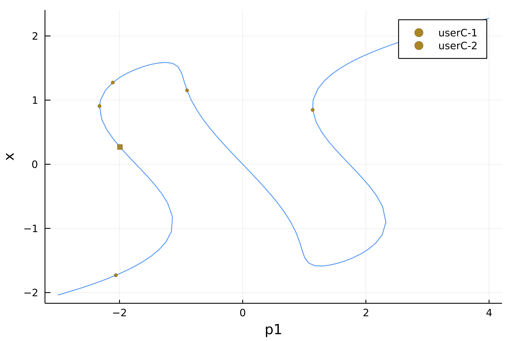

Event Handling
BifurcationKit.jl allows for detecting events along the branch of solutions. Its main use consists in detecting bifurcation points but they can be used and combined together by the user too.
The events are detected during a call to br, = continuation(F, J, u0, p0, lens, contParams::ContinuationPar;kwargs...) by turning on the following flags:
contParams.detectEvent = 1
The event points are located by looking at the function defining the event (see below). The located event points are then returned in br.specialpoint.
Precise detection of event points using Bisection
Note that the event points detected when detectEvent = 1 are only approximate event points. Indeed, we only signal that, in between two continuation steps which can be large, a (several) event point has been detected. Hence, we only have a rough idea of where the event is located, unless your ContinuationPar().dsmax is very small... This can be improved as follows.
If you choose detectEvent = 2, a bisection algorithm is used to locate the event points more precisely. It means that we recursively track down the event. Some options in ContinuationPar control this behavior:
nInversion: number of sign inversions in the bisection algorithmmaxBisectionStepsmaximum number of bisection stepstolParamBisectionEventtolerance on parameter to locate event
Different event types
The set of possible events DiscreteEvent, ContinuousEvent, SetOfEvents, PairOfEvents is detailed in the Library.
Built-in events
BifurcationKit.SaveAtEvent — Function`SaveAtEvent(positions::Tuple)`This event implements the detection of when the parameter values, used during continuation, equals one of the values in positions. This state is then saved in the branch.
For example, you can use it like continuation(args...; event = SaveAtEvent((1., 2., -3.)))
BifurcationKit.FoldDetectEvent — Constant`FoldDetectEvent`This event implements the detection of Fold points based on the p-component of the tangent vector to the continuation curve. It is designed to work with the predictor BorderedPred() that you pass to continuation with the keyword argument tangentAlgo.
BifurcationKit.BifDetectEvent — Constant`BifDetectEvent`This event implements the detection of bifurcations points along a continuation curve. The detection is based on monitoring the number of unstable eigenvalues. More details are given at Detection of bifurcation points.
Examples
We show how to use the different events. We first set up a problem as usual.
using Revise, BifurcationKit, Setfield, ForwardDiff
using Plots
const BK = BifurcationKit
####################################################################################################
# test vector field for event detection
function Feve(X, p)
p1, p2, k = p
x, y = X
out = similar(X)
out[1] = p1 + x - y - x^k/k
out[2] = p1 + y + x - 2y^k/k
out
end
# associated jacobian
Jeve(X, p) = ForwardDiff.jacobian(z -> Feve(z,p), X)
# parameters for the vector field
par = (p1 = -3., p2=-3., k=3)
# parameters for the continuation
opts = ContinuationPar(dsmax = 0.1, ds = 0.001, maxSteps = 128, pMin = -3., pMax = 4.0,
saveSolEveryStep = 1, plotEveryStep = 10,
newtonOptions = NewtonPar(tol = 1e-10, verbose = false, maxIter = 5),
# parameters specific to event detection
detectBifurcation = 0, detectEvent = 2, nInversion = 6, dsminBisection = 1e-9,
maxBisectionSteps = 15, detectFold=false)
# arguments for continuation
args = (Feve, Jeve, -2ones(2), par, (@lens _.p1), opts)
kwargs = (plot = true, verbosity = 3, printSolution = (x,p) -> x[1],
linearAlgo = MatrixBLS(),)Example of continuous event
In this first example, we build an event to detect when the parameter value is -2 or when the first component of the solution is 1.
br, = continuation(args...; kwargs...,
event = BK.ContinuousEvent(2,
(iter, state) -> (getp(state)+2, getx(state)[1]-1)),)gives
julia> br
Branch number of points: 128
Branch of Equilibrium
Parameters p1 from -3.0 to 4.0
Special points:
(ind_ev = index of the bifurcating eigenvalue e.g. `br.eig[idx].eigenvals[ind_ev]`)
- # 1, userC-1 at p1 ≈ -1.99996995 ∈ (-2.00003555, -1.99996995), |δp|=7e-05, [converged], δ = ( 0, 0), step = 25, eigenelements in eig[ 25], ind_ev = 0
- # 2, userC-1 at p1 ≈ -2.10228497 ∈ (-2.10228497, -1.99999798), |δp|=1e-01, [ guess], δ = ( 0, 0), step = 42, eigenelements in eig[ 42], ind_ev = 0
- # 3, userC-2 at p1 ≈ -2.30841066 ∈ (-2.30881920, -2.30841066), |δp|=4e-04, [converged], δ = ( 0, 0), step = 46, eigenelements in eig[ 46], ind_ev = 0
- # 4, userC-1 at p1 ≈ -1.99983405 ∈ (-2.00007518, -1.99983405), |δp|=2e-04, [converged], δ = ( 0, 0), step = 49, eigenelements in eig[ 49], ind_ev = 0
- # 5, userC-2 at p1 ≈ -0.83491347 ∈ (-0.83506349, -0.83491347), |δp|=2e-04, [converged], δ = ( 0, 0), step = 61, eigenelements in eig[ 61], ind_ev = 0
- # 6, userC-2 at p1 ≈ +1.14438624 ∈ (+1.14308305, +1.14438624), |δp|=1e-03, [converged], δ = ( 0, 0), step = 105, eigenelements in eig[105], ind_ev = 0This shows for example that the first component of the event was detected userC-1 first. This yields plot(br)

You can also name the events as follows
br, = continuation(args...; kwargs...,
event = BK.ContinuousEvent(2,
(iter, state) -> (getp(state)+2, getx(state)[1]-1),
("event1", "event2")))And get:
julia> br
(Branch number of points: 128
Branch of Equilibrium
Parameters p1 from -3.0 to 4.0
Special points:
(ind_ev = index of the bifurcating eigenvalue e.g. `br.eig[idx].eigenvals[ind_ev]`)
- # 1, event1 at p1 ≈ -1.99996995 ∈ (-2.00003555, -1.99996995), |δp|=7e-05, [converged], δ = ( 0, 0), step = 25, eigenelements in eig[ 25], ind_ev = 0
- # 2, event1 at p1 ≈ -2.10228497 ∈ (-2.10228497, -1.99999798), |δp|=1e-01, [ guess], δ = ( 0, 0), step = 42, eigenelements in eig[ 42], ind_ev = 0
- # 3, event2 at p1 ≈ -2.30841066 ∈ (-2.30881920, -2.30841066), |δp|=4e-04, [converged], δ = ( 0, 0), step = 46, eigenelements in eig[ 46], ind_ev = 0
- # 4, event1 at p1 ≈ -1.99983405 ∈ (-2.00007518, -1.99983405), |δp|=2e-04, [converged], δ = ( 0, 0), step = 49, eigenelements in eig[ 49], ind_ev = 0
- # 5, event2 at p1 ≈ -0.83491347 ∈ (-0.83506349, -0.83491347), |δp|=2e-04, [converged], δ = ( 0, 0), step = 61, eigenelements in eig[ 61], ind_ev = 0
- # 6, event2 at p1 ≈ +1.14438624 ∈ (+1.14308305, +1.14438624), |δp|=1e-03, [converged], δ = ( 0, 0), step = 105, eigenelements in eig[105], ind_ev = 0Example of discrete event
You can also use discrete events to detect a change. For example, the following detect when the parameter value equals -2:
br, = continuation(args...; kwargs...,
event = BK.DiscreteEvent(1,
(iter, state) -> getp(state)>-2))gives
julia> br
Branch number of points: 128
Branch of Equilibrium
Parameters p1 from -3.0 to 4.0
Special points:
(ind_ev = index of the bifurcating eigenvalue e.g. `br.eig[idx].eigenvals[ind_ev]`)
- # 1, userD at p1 ≈ -1.99996995 ∈ (-2.00003555, -1.99996995), |δp|=7e-05, [converged], δ = ( 0, 0), step = 25, eigenelements in eig[ 25], ind_ev = 0
- # 2, userD at p1 ≈ -2.10228497 ∈ (-2.10228497, -1.99999798), |δp|=1e-01, [ guess], δ = ( 0, 0), step = 42, eigenelements in eig[ 42], ind_ev = 0
- # 3, userD at p1 ≈ -1.99998059 ∈ (-2.00001073, -1.99998059), |δp|=3e-05, [converged], δ = ( 0, 0), step = 49, eigenelements in eig[ 49], ind_ev = 0Example of PairOfEvents event
Let us be a bit more creative and combine a continuous event with a discrete one:
br, = continuation(args...; kwargs...,
event = BK.PairOfEvents(
BK.ContinuousEvent(1, (iter, state) -> getp(state)),
BK.DiscreteEvent(1, (iter, state) -> getp(state)>-2)))and obtain
julia> br
(Branch number of points: 128
Branch of Equilibrium
Parameters p1 from -3.0 to 4.0
Special points:
(ind_ev = index of the bifurcating eigenvalue e.g. `br.eig[idx].eigenvals[ind_ev]`)
- # 1, userD-1 at p1 ≈ -1.99996995 ∈ (-2.00003555, -1.99996995), |δp|=7e-05, [converged], δ = ( 0, 0), step = 25, eigenelements in eig[ 25], ind_ev = 0
- # 2, userD-1 at p1 ≈ -2.10228497 ∈ (-2.10228497, -1.99999798), |δp|=1e-01, [ guess], δ = ( 0, 0), step = 42, eigenelements in eig[ 42], ind_ev = 0
- # 3, userD-1 at p1 ≈ -1.99998059 ∈ (-2.00001073, -1.99998059), |δp|=3e-05, [converged], δ = ( 0, 0), step = 49, eigenelements in eig[ 49], ind_ev = 0
- # 4, userC-1 at p1 ≈ +0.00000555 ∈ (-0.00000855, +0.00000555), |δp|=1e-05, [converged], δ = ( 0, 0), step = 69, eigenelements in eig[ 69], ind_ev = 0Here userD-1 means that the first component of the discrete event was detected. Of course, you can name the event like done above.
Example of set of events
We can combine more events and chain them like we want using SetOfEvents. In this example, we show how to do bifurcation detection and event location altogether:
ev1 = BK.ContinuousEvent(1, (iter, state) -> getp(state)-1)
ev2 = BK.ContinuousEvent(2, (iter, state) -> (getp(state)-2, getp(state)-2.5))
# event to detect bifurcation
ev3 = BK.BifDetectEvent
# we combine the events together
eve = BK.SetOfEvents(ev1, ev2, ev3)
br, = continuation(args...; kwargs...,
event = eve)Which gives
julia> br
Branch number of points: 132
Branch of Equilibrium
Parameters p1 from -3.0 to 4.0
Special points:
(ind_ev = index of the bifurcating eigenvalue e.g. `br.eig[idx].eigenvals[ind_ev]`)
- # 1, bp at p1 ≈ -1.13352254 ∈ (-1.13352254, -1.13351184), |δp|=1e-05, [ guess], δ = ( 1, 0), step = 33, eigenelements in eig[ 34], ind_ev = 1
- # 2, bp at p1 ≈ -2.32505840 ∈ (-2.32505840, -2.32505721), |δp|=1e-06, [converged], δ = (-1, 0), step = 46, eigenelements in eig[ 47], ind_ev = 1
- # 3, hopf at p1 ≈ -0.95278292 ∈ (-0.95406239, -0.95278292), |δp|=1e-03, [converged], δ = ( 2, 2), step = 60, eigenelements in eig[ 61], ind_ev = 2
- # 4, hopf at p1 ≈ +0.95484802 ∈ (+0.95357386, +0.95484802), |δp|=1e-03, [converged], δ = (-2, -2), step = 80, eigenelements in eig[ 81], ind_ev = 2
- # 5, userC1 at p1 ≈ +1.00001539 ∈ (+0.99997148, +1.00001539), |δp|=4e-05, [converged], δ = ( 0, 0), step = 82, eigenelements in eig[ 82], ind_ev = 0
- # 6, userC2-1 at p1 ≈ +2.00064090 ∈ (+1.99678144, +2.00064090), |δp|=4e-03, [converged], δ = ( 0, 0), step = 91, eigenelements in eig[ 91], ind_ev = 0
- # 7, bp at p1 ≈ +2.32505860 ∈ (+2.32505860, +2.32505861), |δp|=1e-08, [converged], δ = ( 1, 0), step = 95, eigenelements in eig[ 96], ind_ev = 1
- # 8, userC2-1 at p1 ≈ +1.99961809 ∈ (+1.99961809, +2.00135833), |δp|=2e-03, [converged], δ = ( 0, 0), step = 99, eigenelements in eig[ 99], ind_ev = 0
- # 9, bp at p1 ≈ +1.13290310 ∈ (+1.13286417, +1.13290310), |δp|=4e-05, [converged], δ = (-1, 0), step = 108, eigenelements in eig[109], ind_ev = 1
- # 10, userC2-1 at p1 ≈ +2.00114454 ∈ (+1.99694626, +2.00114454), |δp|=4e-03, [converged], δ = ( 0, 0), step = 116, eigenelements in eig[116], ind_ev = 0
- # 11, userC2-2 at p1 ≈ +2.50216926 ∈ (+2.49360973, +2.50216926), |δp|=9e-03, [converged], δ = ( 0, 0), step = 120, eigenelements in eig[120], ind_ev = 0And